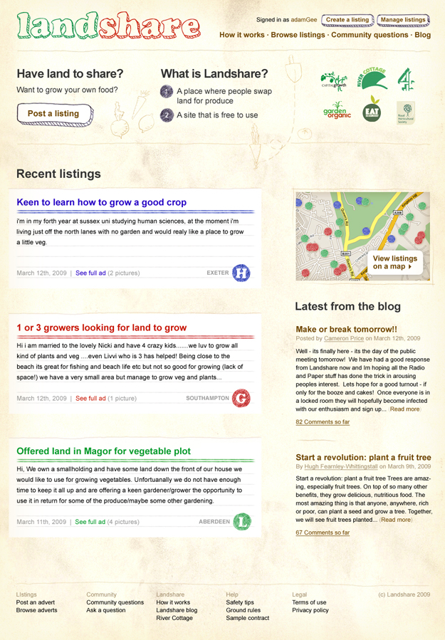
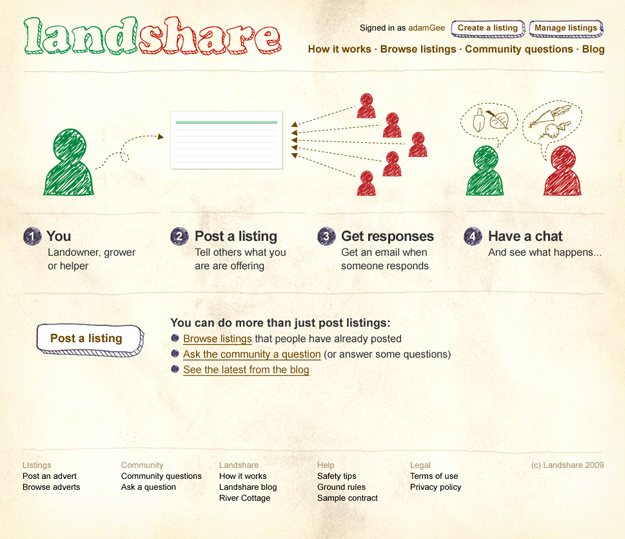
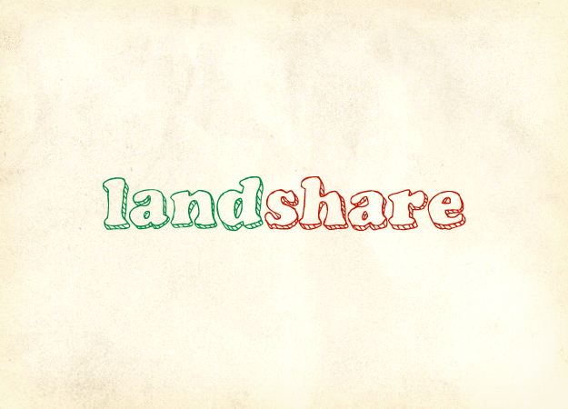
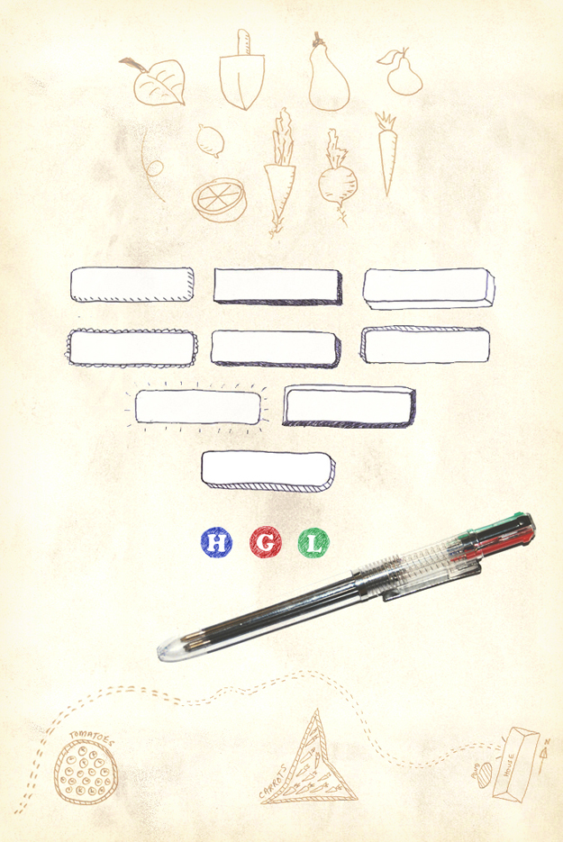
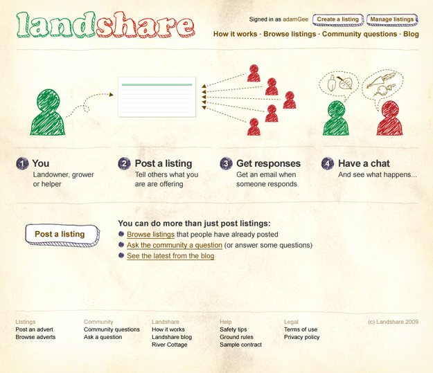
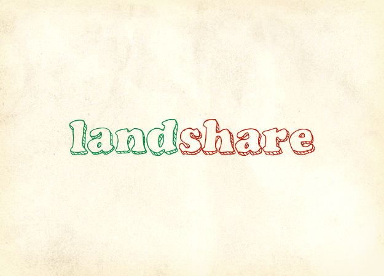
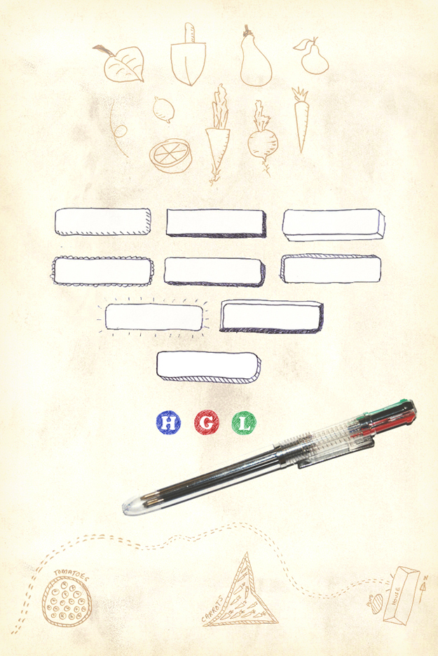

Client
Role
Interface Design, Visual Identity
Overview
In collaboration with Hugh Fearnley-Whittingstall’s River Cottage, Landshare connects people who want to grow their own veg with people who have got land to spare.